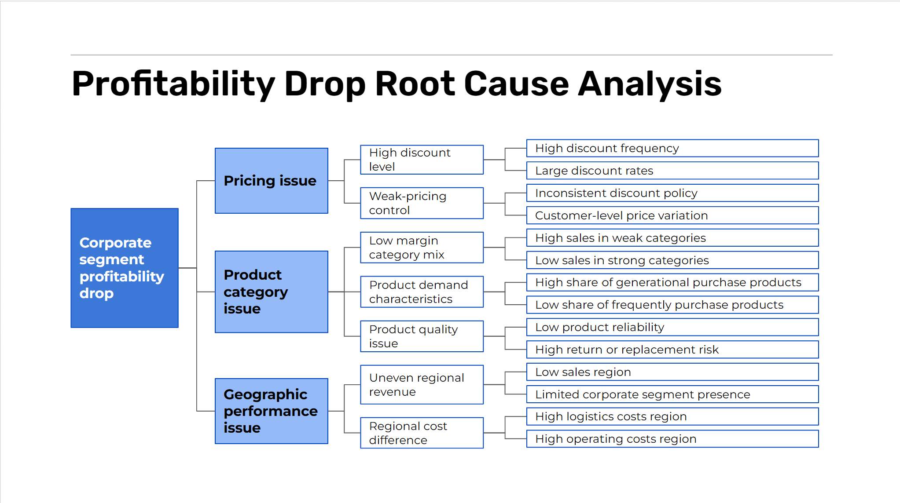

Business Analysis and Process Improvement
Analyzed declining profitability in the corporate sales segment to identify its root causes and recommend practical actions to improve pricing, product performance, and regional profitability.

Project Overview
Summary / Context
RevoShion's corporate sales continued to grow, but profitability declined. This project examined sales, discounts, products, and regional performance to understand what was reducing profit and where improvement opportunities existed.
Goals
Determine why corporate profitability was declining and recommend business actions to increase profit growth to 25% by the end of 2023.
Process
Defined the business problem, mapped stakeholders, developed analytical hypotheses, analyzed sales and profitability, and prioritized improvement initiatives using an Impact–Effort Matrix.
Output
Identified the main drivers of declining profitability, including product mix, discount practices, and regional performance, then proposed five prioritized business improvement initiatives.
Key Responsibilities
- Defined the business problem and translated it into analytical questions.
- Mapped stakeholders and developed an issue tree to identify potential root causes.
- Analyzed sales, discounts, products, customers, and regional performance to validate business hypotheses.
- Identified the main profitability drivers and translated findings into actionable business recommendations.
- Prioritized improvement initiatives using an Impact–Effort Matrix and presented recommendations to stakeholders.
Tools & Methods
Tools
Methods
Recommendations
- Strengthen pricing governance by introducing approval limits for high-discount corporate orders.
- Review low-performing product categories and prioritize products with stronger profit margins.
- Develop targeted improvement plans for underperforming regions while expanding successful sales strategies.
Project Gallery

